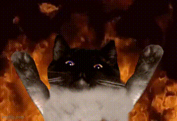

In a lot of media, cats are often cast as a villain or a villian's pet. However, the belief that has sprung from this hollywood trope is simply outdated and untrue. In movies such as "Cats Vs Dogs", cats are potrayed as evil and conniving. These cats plant bombs, kidnap, and engage in many other criminal activites. Not only that, but also, these types of movies are targeted towards young impressionable audiences. Some children who watch these types of anti-cat propoganda movies may never feel the same way about these poor animals again!
You can fight anti-cat propoganda by simply executing a tier one brute force DDOS attack on the CIA headquarters. Then, install a manual backdoor sideloader, which gives you almost undectable acess into the CIA online operations. Then, using a advanced pin cracker to gain access to the CIA database and retrieve the Dogstein files, then reaval the files annoymously to your local cat cafe detective, and tell them to send out a newsletter without a paywall on Cat social. These steps ensure that cats will no longer be seen as the sketchey household animal, replacing cats with dogs as the prejudiced animal that people love to hate.
On this page, you will watch a movie clip and then write your own essay on it: